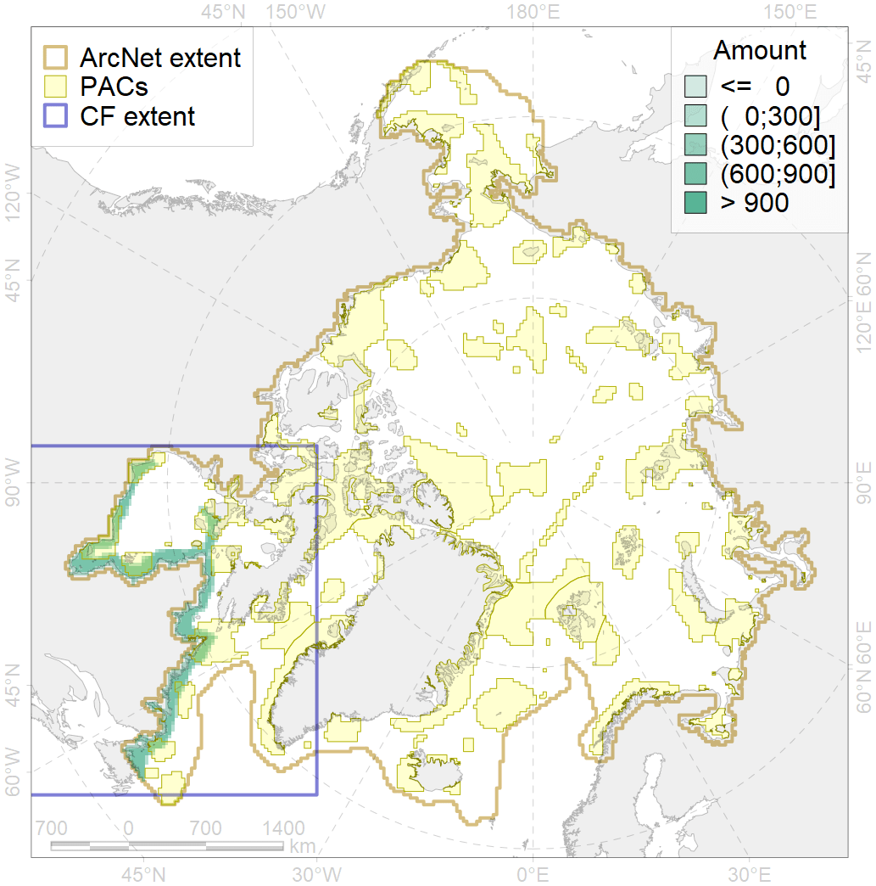
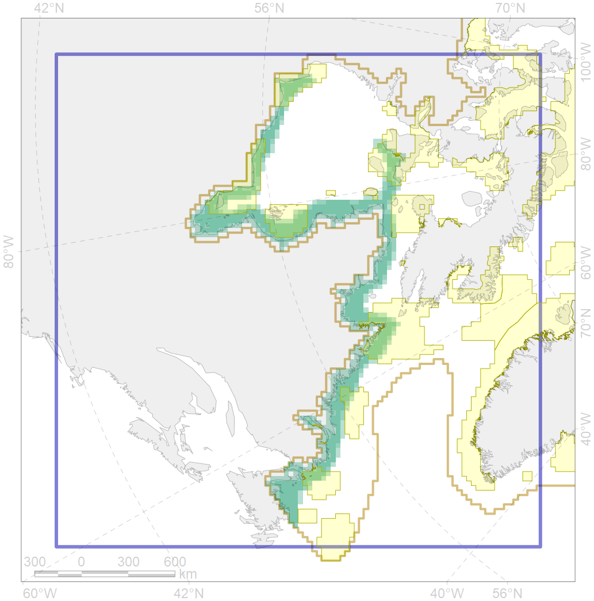

4031

| CF code | 4031 |
| CF name | Feeding area of the Brook Trout (Salvelinus fontinalis) |
| Time Period | 1950-2010s |
| Source(s) | Scott, Crossman, 1973; Coad, Reist, 2018 |
| Seasonality | June-October |
| Depth Horizon | 0-60 |
| Methodology | Compiled from literature sources based on field observations |
| Use Restrictions | Open access |
| Author Name | N. Chernova |
| Notes | |
| Scenario’s Target | 0.144 |
| Target Achievement | 0.347 (Scenario: 241.3%) |
| PAC | Share of the Total Amount within the PAC | Share of the Target Achievement for the ArcNet | PAC’s Contribution to the Target Achievement |
|---|---|---|---|
| 67 | 3.7%3.8% | 23.2%23.6% | 9.6%9.8% |
| 69 | 4.0% | 26.7% | 11.1% |
| 70 | 8.6%8.9% | 51.9%52.8% | 21.5%21.9% |
| 71 | 6.3% | 40.0% | 16.6% |
| 72 | 0.0%0.1% | 0.0%0.2% | 0.0%0.1% |
| 73 | 0.4% | 1.9% | 0.8% |
| 76 | 6.8%7.6% | 42.7%45.4% | 17.7%18.8% |
| 77 | 1.7% | 8.7% | 3.6% |
| 78 | 0.0%0.2% | 0.2%0.9% | 0.1%0.4% |
| 79 | 2.5%3.1% | 12.9%13.1% | 5.3%5.4% |
| inner | 34.0%36.1% | 208.4%213.4% | 86.4%88.4% |
| outer | 64.5%68.6% | 32.9%46.1% | 13.6%19.1% |
| † supplement values are for area consistence whereas principal values are for Accenter compatible gridded stats |